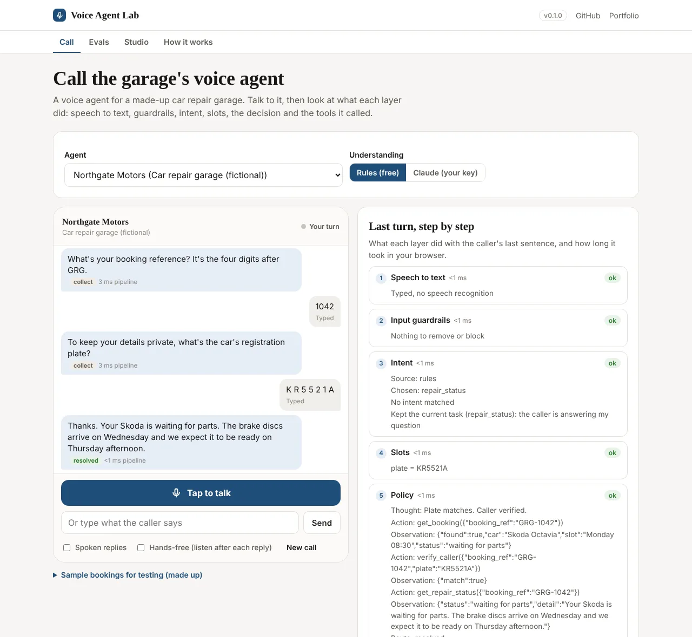

The problem
Voice agents look easy in a demo and fail in quiet ways in production. Speech recognition mishears words, and a model can say something it never should, such as "yes, it's safe to drive". I wanted to answer three platform questions: which parts a model should do and which must stay as tested rules, what should block a release, and what a new agent should define versus inherit.

What it does
- Call: talk to the agent, and see what speech to text, guardrails, intent, slots, policy, tools and output checks did with each sentence, with timings.
- Evals: 70 test calls scored per layer, simulated speech errors over 10 seeds, and a release gate that blocks on safety and guardrails.
- Studio: agents as config on a shared platform. A new agent deploys only when it passes platform and agent tests, and the time to deploy is measured.
- Claude, optional: understands the caller and words replies. The rules still decide, and the guardrails check every reply.
Findings and decisions
Speech errors cost task completion far more than intent
With about 10% of words misheard or dropped, intent accuracy on the holdout set falls to 88.6% but containment falls to 56.0%, because one lost word in any turn breaks a multi-turn task.
One random seed hid a safety miss
A single noisy run showed 100% safety recall. Ten seeds showed 92.5% on average at the same noise level, so the release gate now fails when it should.
The deploy gate caught a real config bug
In the tyre shop template, a general pattern listed first swallowed a more specific service. The agent's own tests blocked the deploy until the order was fixed.
The model understands, the rules decide
Claude fills intent and details. Verification, bookings, handoffs and guardrails stay in code, and safety rules override the model. Clean test scores are reported as an upper bound, because I wrote the test calls.
What I would do next
- Compare Claude and rules on the holdout set, with and without speech errors.
- A confirm question when a partial safety cue is heard, to close the gap under noise.
- Test calls from people who have not seen the rules, then a real phone line with latency measured.